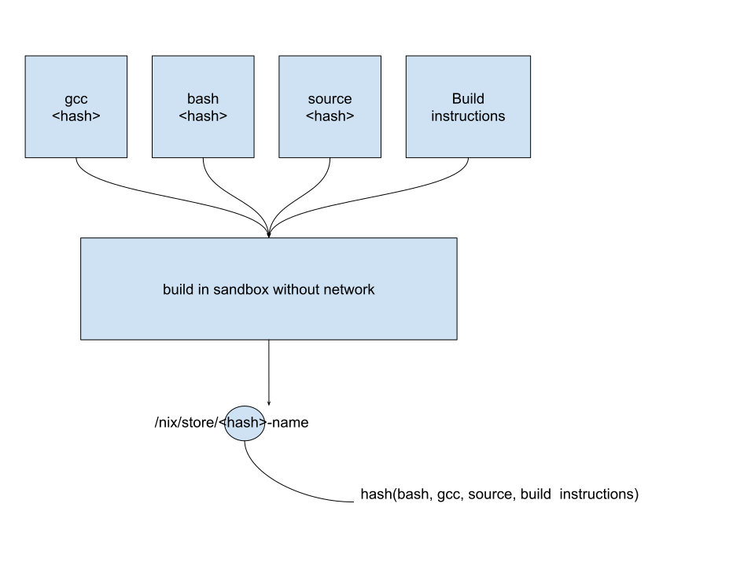
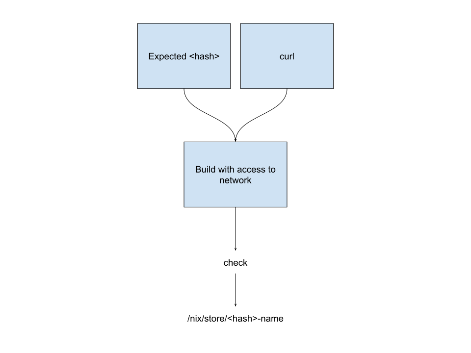

Introduction To Nix (Part III)
August 2018
by Michael Fellinger
After the install
source ~/.nix-profile/etc/profile.d/nix.sh
nix-channel --add \
https://nixos.org/channels/nixpkgs-18.03-darwin nixpkgs
nix-channel --update
First steps
nix-channel --add https://nixos.org/channels/nixpkgs-18.03-darwin nixpkgs
nix-channel --update
nix-env -iA nixpkgs.hello
nix-env -u hello
nix-env --list-generations
nix-env --rollback
nix-env -e hello
nix-collect-garbage
Nix Store
/nix/store/rqjf7a7i5wh7d0mryy69mzy3nr511acs-home-manager-path/bin/git
/nix/store/6p18brdpbj91snn4zmg9dwb4yyaf1501-crystal-0.25.0/
├── bin
│ └── crystal
├── lib
│ └── crystal
└── share
├── bash-completion
├── doc
├── licenses
├── man
└── zsh
Environments
- System wide
- User owned
- Project specific
- Service specific
All reproducible and can reuse each others code!
Platform independent
Nix runs on Linux (not only NixOS), MacOS, BSD, Windows, and more. NixOS has been ported to many platforms, so it runs on i686, x86_64, MIPS, ARM, and AArch64 So you can use it on anything from Supercomputers to your Router, also MacBooks and Rasberry Pis.
You don’t have to run NixOS to use Nix, although that gives you many benefits.
What’s a Nix Package?
- A Nix source file is a function.
- The function returns “derivations”
- Dependencies are given as parameters to the function
Calling Packages
The top-level passes arguments automatically using callPackage:
cowsay = callPackage ./pkgs/cowsay {};
The function
{ stdenv, fetchgit, perl }:
stdenv.mkDerivation {
name = "cowsay-3.03+dfsg1-16";
src = fetchgit {
url = https://anonscm.debian.org/git/collab-maint/cowsay.git;
rev = "acb946c166fa3b9526b9c471ef1330f9f89f9c8b";
sha256 = "1ji66nrdcc8sh79hwils3nbaj897s352r5wp7kzjwiym8bm2azk6";
};
buildInputs = [ perl ];
installPhase = ''
bash ./install.sh $out
'';
meta = {
description = "A program which generates ASCII pictures of a cow with a message";
homepage = http://www.nog.net/~tony/warez/cowsay.shtml;
platforms = stdenv.lib.platforms.all;
maintainers = [ stdenv.lib.maintainers.rob ];
};
}
Writing our first Nix package
{ stdenv }:
stdenv.mkDerivation {
name = "hello";
unpackPhase = "true";
src = ./hello.rb;
installPhase = ''
install -m 0744 -D $src $out/bin/hello
'';
}



Nix-Shell
On-demand project specific development environments:
with import (fetchTarball {
url = https://github.com/NixOS/nixpkgs-channels/archive/98792fe35152d3470929b40ad83359b605233a76.tar.gz;
sha256 = "1p52zqpp924nwcp534whznrwsgrfi8mas0n1wsrrh6kpsxmlh64f";
}) {};
mkShell {
buildInputs = [
ruby_2_5
nodejs-9_x
go_1_10
elixir
libxml2
];
}
Nix-Shell in practice
So the next time you work on a project, you get the exact same version of all dependencies as everybody else and don’t have to install anything manually.
This is extremely useful, especially when you come back a year later and completely forgot what’s needed (no fear of forgetting to updating docs).
Nix-Shell & Direnv
The dream-team for people who constantly switch between projects.
Given a .envrc:
use nix
You can simply change into a directory and you’ll automatically be in a nix-shell.
nix-darwin
Nix modules for darwin, /etc/nixos/configuration.nix for macOS.
{ pkgs, ... }:
{
shellAliases = with pkgs; {
v = "${neovim}/bin/nvim";
g = "${gitFull}/bin/git"
c = "clear";
};
environment.systemPackages = with pkgs; {
curl di direnv emacs jq htop
};
environment.variables = {
EDITOR = "nvim";
LESS = "-M";
};
system.default.dock.autohide = true;
system.defaults.finder.AppleShowAllExtensions = true;
system.defaults.trackpad.Clicking = true;
...
}
NixOps
{
server_alpha = {
deployment.targetEnv = "virtualbox";
services = {
nginx.enable = true;
kubernetes.enable = true;
redis = {
enable = true;
port = 777;
}
};
fileSystems."/data" = {
fsType = "nfs4";
device = "fileserver:/";
};
}
fileserver = {
deployment.targetEnv = "virtualbox";
services.nfs.server.enable = true;
services.nfs.server.exports = ''
/exported/directory server_alpha
'';
};
}
nixops created -d simple network.nix
nixops deploy -d simple
NixOps Deploys To
- Amazon EC2 instances and other resources (such as S3 buckets, EC2 key pairs, elastic IPs, etc.).
- Google Cloud Engine instances and other resources (such as networks, firewalls, IPs, disks, etc.).
- VirtualBox virtual machines.
- Hetzner machines.
- NixOS containers.
- Any machine already running NixOS.
home-manager
Can manage your dotfiles and applications, here’s a little sample of my config:
{ pkgs, ... }:
{
home.packages = with pkgs; [
tree ripgrep ruby chromium elixir go fzy
];
programs.zsh = {
enable = true;
enableAutosuggestions = true;
enableCompletion = true;
history = {
ignoreDups = true;
save = 1000000;
size = 1000000;
};
shellAliases = {
v = "vim";
c = "clear";
open = "xdg-open";
};
oh-my-zsh = {
enable = true;
theme = "flazz";
plugins = [
"docker"
"git"
"man"
"nyan"
"ssh-agent"
"sudo"
"vi-mode"
"yarn"
"zsh-navigation-tools"
"systemd"
"tmux"
];
};
};
}
more at https://github.com/manveru/dotfiles